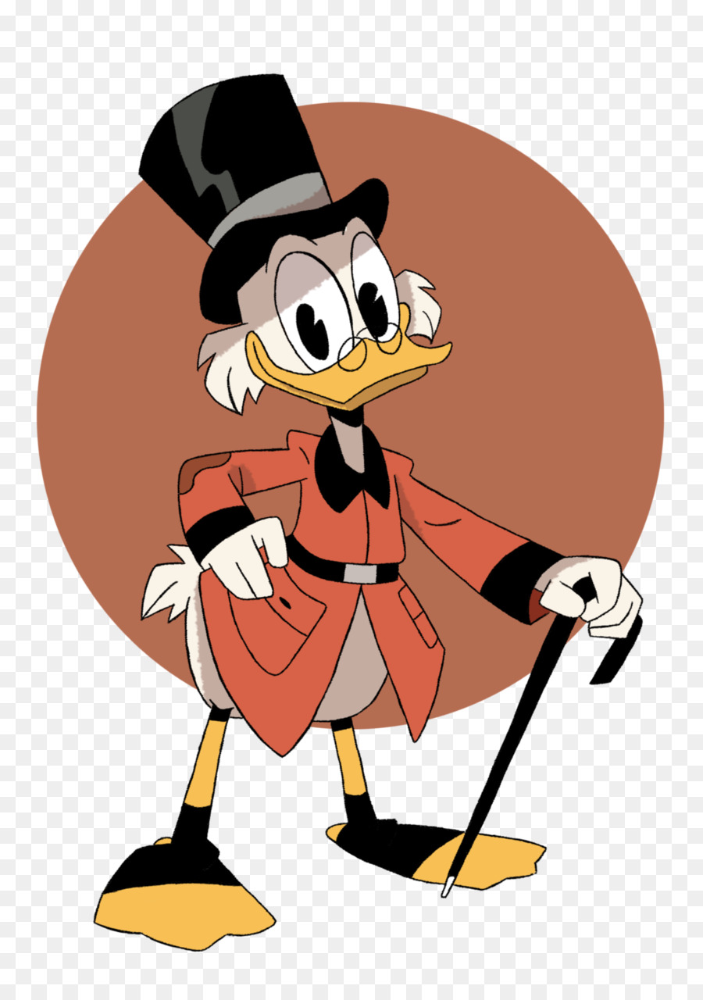

«Школа Ефремова» — литературное направление, представители которого группировались со второй половины 1970-х годов вокруг редакции фантастической литературы издательства «Молодая гвардия», возглавлявшейся в 1973—1978 годах Юрием Медведевым, а в 1978—1992 годах — Владимиром Щербаковым (последовательно отрицавшим свою связь со «школой»). В первой половине 1970-х годов советская литература, и мейнстримная, и фантастическая, испытывала раскол, коренящийся как в культурно-идеологической («западники» — «почвенники»), так и в мировоззренчески-поколенческой (сциентизм — нью-эйдж) и экономической сферах: в условиях плановой экономики шла борьба различных писательских группировок за объёмы издательских планов. Практическую монополию на издание фантастики имела «Молодая гвардия»; кроме того, неофициальными квотами на печатание фантастических произведений обладали издательства «Детская литература» и «Знание». В период руководства Ю. Медведева возникла так называемая «школа Ефремова» (термин появился в следующем десятилетии), названная в честь скончавшегося в 1972 году писателя-фантаста И. А. Ефремова. Медведев претендовал на развитие тематики ефремовских произведений, особенно связанной с древней историей и эзотерикой. «Школой Ефремова» именовалось также Всесоюзное творческое объединение молодых писателей-фантастов издательства «Молодая гвардия» (ВТО МПФ, существовало в 1987—1991 годах), противопоставленное её создателями «четвёртой волне» советской фантастики, связанной с творчеством Стругацких. Во второй половине 1980-х годов «школа Ефремова» объединяла примерно 80 % советских писателей-фантастов, критиков-фантастоведов, библиографов, активистов клубов любителей фантастики. Литературная продукция авторов «школы Ефремова» вызывала преимущественно негативные отзывы как советских, так и эмигрантских критиков. В щербаковской редакции «Молодой гвардии» начали писательскую карьеру Александр Бушков, Василий Головачёв и Юрий Никитин, а в ВТО МПФ — Василий Звягинцев.
